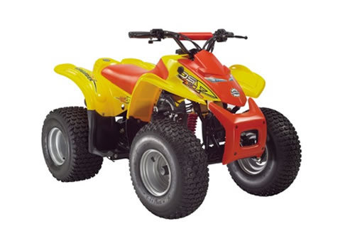

| Bombardier DS50 / DS90 service manual repair 2002 DS 50 90 | |
 |
Instant download of the factory repair manual for the 2002 Bombardier DS50 and DS90 youth atvs. Can also be used for models through 2006. Covers 2-stroke and 4-stroke models. 147 pages. |
 |